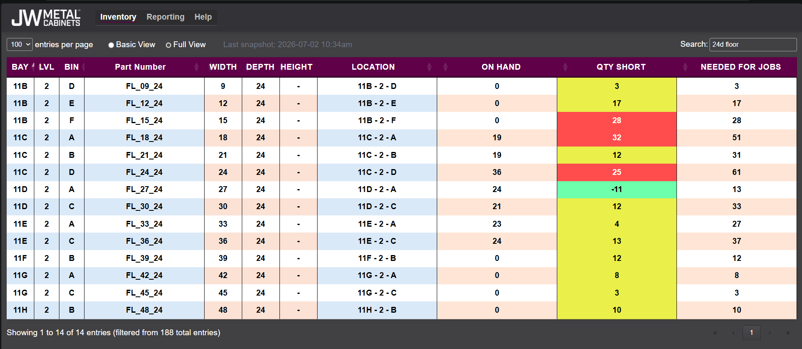

Dashboard Guide
🔍 Searching
The search box can be used to search for visible data, but also works with dimensions, common names, and a few custom tags.
For example, searching "24d floor" returns a list of all floors compatible with 24" deep base cabinets.

Some tags to try:
FHB
Box
Header / Floor / Back / Side
18W / 24D / 34.5H / etc.
Tip: Combine multiple tags to help narrow your search.
👁 View Modes
Basic View
- Shows Location, Part Name, On Hand, and Qty Short.
- See the most critical areas at a glance.
Full View
- Displays all inventory information.
- Default view, useful when verifying part dimensions.
🎨 Inventory Status Colors
Forecast values are compared against the current On Hand quantity.
- Green — Inventory meets or exceeds forecast.
- Yellow — Forecast exceeds inventory by 1–19 units.
- Red — Forecast exceeds inventory by 20 or more units.
📦 Inventory Data
Inventory information and all live tracking/calculation is done through the master Excel workbook, this website simply hosts a copy.
The snapshot timestamp on the Inventory page indicates when the current data was exported.
Note: Data shown on the dashboard reflects the most recent snapshot and is not live.
📊 Reporting
The Reporting page contains summary metrics and analysis generated from the current inventory snapshot.
Additional reports and charts will be added as new reporting features are developed.
💡 Need Something?
email Don👍